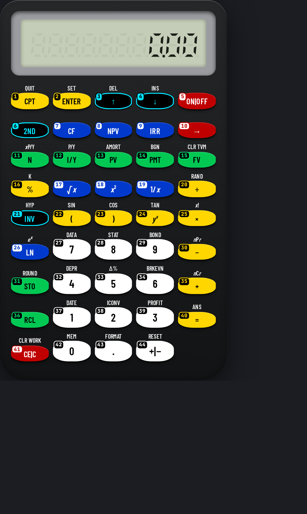

This manual belongs to the U-45 CALCULATORS app and describes calculator #9 — Financial Business Analyst exactly as it behaves in the app. Every worked example and every drill answer in this book was run on the app's own keys by an automated checker before printing; only results that matched were kept.
Keys are written as a chip showing the key number and its face, for example #1 CPT. Numbers follow the numbering printed on the keys (switch it on with “# On”). A shifted function is written as two chips: the shift key, then the key that carries the function.
financial AOS with worksheets (= completes; TVM keys store and CPT computes).
Open U-45 CALCULATORS, choose #9 from the home screen (or the jump list at the top), and the calculator appears with its numbered, colour-coded keys. Click or tap keys, or type on a keyboard.
Every key carries a small number in the same reading order as this manual (left→right, top→bottom; the navigation pad counts ▲ ▼ ◀ ▶ then its centre). Use “# On / # Off” in the bar above the calculator to show or hide them — the setting is remembered.
Keys are coloured by job: white = digits, yellow = operators/execute, blue = functions, green = memory/variables, red = clear/delete/power, black with cyan = shift/modes/menus/navigation. Press “Classic” to return to the original model colours and “Hi-Contrast” to come back.
Display text uses the U45 Display face, key legends use U45 Keys (a condensed face that stays readable on small keys) and key numbers / helper text use U45 Mono. All three are bundled inside the app, so they work offline.
The Copy button copies exactly what the display shows (indicators that are switched off are skipped) so you can paste a result into a message or spreadsheet.
Fit scales the calculator to your screen; 1:1 shows it at its design size. On a phone, Fit is the comfortable choice.
Reset rebuilds this calculator from scratch: display, memory, stack and modes return to their start-up state. Use it before each worked example in this manual.
On a computer you can type: digits, + − * / ^ ( ), Enter or = to execute, Backspace to delete, Esc to clear, arrows to move. Letters reach common functions (see the Keyboard shortcuts chapter).
Hover over (or long-press) a key to see “#number name”.
A cyan icon rail on the right of every calculator opens 15 panels: Currency (166 currencies, rates auto-updated from open.er-api.com or Frankfurter when online and cached with a date; the bundled dated snapshot is used offline), Units (exact SI factors), Health (published formulas, not medical advice), Simple, Complex, Loans, Construction, Mechanical and Engineering (30+ numbered tools each), Calendar generator, Customize (26 options, saved per calculator), Settings (31 options), History, Hide and View. On narrow phones the rail shows icons only.
Every calculation is logged per calculator with a date and time. Open History on the rail to search, re-use (types the input back into the calculator), copy, delete one, select several and delete, or delete all (asks for confirmation). History is stored encrypted on this device (AES-GCM); exporting it needs the passcode.
The green CS button between Restore and Social reads a problem from the camera, a photo, a PDF or a text file. Recognition (Tesseract OCR, English) runs offline on the device; an online language download is only used if you switch it on in Settings. Check and edit the recognised text, then Solve shows the steps offline. OCR is not available when the app is opened as a plain file:// page in a browser.
The layout selector between Fit and # offers Auto plus 12 layouts: 3D classic, 3D high-contrast, Classic, Pocket, Compact, Expanded, Desktop wide, Split, One-hand left, One-hand right, Large print and Minimal. Auto picks one for your screen and your choice is remembered per calculator. The View panel hides the top bars, the tool bar, the rail or everything (full screen); the round yellow ⤢ button at bottom-left (or Esc) always restores the normal view.
The Hide panel lists every button, rail icon and section of this calculator as tick boxes. Hiding is instant; unhiding asks for the app passcode.
Right-click, drag and long-press saving of images is blocked inside the app. Saving or sharing an image export (PNG, JPG, QR, calendar), printing a calendar, and downloading or sharing the app itself ask for the passcode, and exported images carry a U-45 watermark. Honest note: this cannot stop a screenshot or screen recording made by the operating system or another device.
U-45 CALCULATORS is an offline app: after the first load everything — including fonts — comes from the device.
| Colour | Group | Keys on this model |
|---|---|---|
| num | Digits & number entry | #27, #28, #29, #32, #33, #34, #37, #38, #39, #42, #43, #44 |
| op | Operators & execute | #1, #2, #16, #20, #22, #23, #24, #25, #30, #35, #40 |
| fn | Functions | #7, #8, #9, #17, #18, #19, #26 |
| mem | Memory, variables & registers | #11, #12, #13, #14, #15, #31, #36 |
| clr | Clear, delete & power | #5, #10, #41 |
| mod | Shift, modes, menus & navigation | #3, #4, #6, #21 |
54 features: 37 live on the keys, 9 app/UI features, 8 planned (documented but not yet working — they are clearly marked and never used in examples).
Calculator #9 with key numbers shown (Hi-Contrast colours).
“Shift” = 2nd / f / SHIFT layer; “Alpha” = ALPHA layer; “3rd” = 3rd / g layer. A dot means the layer is empty on that key.
| # | Face | Shift | Alpha | 3rd | Group |
|---|---|---|---|---|---|
| 1 | CPT | QUIT | · | · | op |
| 2 | ENTER | SET | · | · | op |
| 3 | ↑ | DEL | · | · | mod |
| 4 | ↓ | INS | · | · | mod |
| 5 | ON|OFF | · | · | · | clr |
| 6 | 2ND | · | · | · | mod |
| 7 | CF | · | · | · | fn |
| 8 | NPV | · | · | · | fn |
| 9 | IRR | · | · | · | fn |
| 10 | → | · | · | · | clr |
| 11 | N | xP/Y | · | · | mem |
| 12 | I/Y | P/Y | · | · | mem |
| 13 | PV | AMORT | · | · | mem |
| 14 | PMT | BGN | · | · | mem |
| 15 | FV | CLR TVM | · | · | mem |
| 16 | % | K | · | · | op |
| 17 | √x | · | · | · | fn |
| 18 | x² | · | · | · | fn |
| 19 | 1/x | · | · | · | fn |
| 20 | ÷ | RAND | · | · | op |
| 21 | INV | HYP | · | · | mod |
| 22 | ( | SIN | · | · | op |
| 23 | ) | COS | · | · | op |
| 24 | yx | TAN | · | · | op |
| 25 | × | x! | · | · | op |
| 26 | LN | ex | · | · | fn |
| 27 | 7 | DATA | · | · | num |
| 28 | 8 | STAT | · | · | num |
| 29 | 9 | BOND | · | · | num |
| 30 | − | nPr | · | · | op |
| 31 | STO | ROUND | · | · | mem |
| 32 | 4 | DEPR | · | · | num |
| 33 | 5 | Δ% | · | · | num |
| 34 | 6 | BRKEVN | · | · | num |
| 35 | + | nCr | · | · | op |
| 36 | RCL | · | · | · | mem |
| 37 | 1 | DATE | · | · | num |
| 38 | 2 | ICONV | · | · | num |
| 39 | 3 | PROFIT | · | · | num |
| 40 | = | ANS | · | · | op |
| 41 | CE|C | CLR WORK | · | · | clr |
| 42 | 0 | MEM | · | · | num |
| 43 | . | FORMAT | · | · | num |
| 44 | +|− | RESET | · | · | num |
Every key on calculator #9, in number order, with every function it carries in this app.
20 examples, each run on this calculator's keys by the U-45 checker. Follow the chips in order.
Calculate 12 + 3 × 4. Press Reset first.
#37 1 → #38 2 → #35 + → #22 ( → #39 3 → #25 × → #32 4 → #23 ) → #40 =
Display shows 24.00 — expected 24. ✔ verified on the app.
Multiplication is done before addition, so the calculator holds the + until the × part is finished.
Calculate (12 + 8) ÷ 4. Press Reset first.
#22 ( → #37 1 → #38 2 → #35 + → #28 8 → #23 ) → #20 ÷ → #32 4 → #40 =
Display shows 5.00 — expected 5. ✔ verified on the app.
Brackets force the sum to be worked out before the division.
Calculate (3 + 4) × (9 − 2). Press Reset first.
#22 ( → #39 3 → #35 + → #32 4 → #23 ) → #25 × → #22 ( → #29 9 → #30 − → #38 2 → #23 ) → #40 =
Display shows 49.00 — expected 49. ✔ verified on the app.
Both brackets are evaluated first, then multiplied.
Calculate 12². Press Reset first.
#37 1 → #38 2 → #18 x² → #40 =
Display shows 144.00 — expected 144. ✔ verified on the app.
x² squares the value — quicker and safer than typing the number twice.
Calculate √144. Press Reset first.
#37 1 → #32 4 → #32 4 → #17 √x → #40 =
Display shows 12.00 — expected 12. ✔ verified on the app.
The square-root key returns the principal (positive) root.
Calculate 2^10. Press Reset first.
#38 2 → #24 yx → #37 1 → #42 0 → #40 =
Display shows 1024.00 — expected 1024. ✔ verified on the app.
The power key raises the first number to the second.
Calculate 1 ÷ 4 (x⁻¹). Press Reset first.
#32 4 → #19 1/x → #40 =
Display shows 0.25 — expected 0.25. ✔ verified on the app.
x⁻¹ (1/x) gives the reciprocal — handy for resistors in parallel or rates.
Calculate sin 30° (Deg mode). Press Reset first.
#39 3 → #42 0 → #6 2ND → #22 SIN → #40 =
Display shows 0.50 — expected 0.5. ✔ verified on the app.
Trig functions use the current angle unit; these answers assume degrees (the start-up setting).
Calculate ln 1. Press Reset first.
#37 1 → #26 LN → #40 =
Display shows 0.00 — expected 0. ✔ verified on the app.
ln is the natural (base-e) logarithm.
Calculate e^1. Press Reset first.
#37 1 → #6 2ND → #26 ex → #40 =
Display shows 2.72 — expected 2.71828183. ✔ verified on the app.
eˣ is the inverse of ln.
Calculate −5 + 12. Press Reset first.
#33 5 → #44 +|− → #35 + → #37 1 → #38 2 → #40 =
Display shows 7.00 — expected 7. ✔ verified on the app.
Use the sign key for a negative number — not the subtraction key.
Calculate 5C2. Press Reset first.
#33 5 → #6 2ND → #35 nCr → #38 2 → #40 =
Display shows 10.00 — expected 10. ✔ verified on the app.
nCr counts selections where order does not matter.
Calculate 5!. Press Reset first.
#33 5 → #6 2ND → #25 x! → #40 =
Display shows 120.00 — expected 120. ✔ verified on the app.
n! multiplies 1×2×…×n; 0! is 1 by definition.
Calculate 12 × 3 = , then Ans ÷ 5. Press Reset first.
#37 1 → #38 2 → #25 × → #39 3 → #40 = → #20 ÷ → #33 5 → #40 =
Display shows 7.20 — expected 7.2. ✔ verified on the app.
Pressing an operator straight after a result continues from that answer (Ans).
Calculate 15 % of 80. Press Reset first.
#28 8 → #42 0 → #25 × → #37 1 → #33 5 → #16 % → #40 =
Display shows 12.00 — expected 12. ✔ verified on the app.
The percent key turns the second number into a percentage of the first.
Calculate (4 + 8 + 15) ÷ 3. Press Reset first.
#22 ( → #32 4 → #35 + → #28 8 → #35 + → #37 1 → #33 5 → #23 ) → #20 ÷ → #39 3 → #40 =
Display shows 9.00 — expected 9. ✔ verified on the app.
Add up the values, then divide by how many there are.
Calculate 50 − 4 × 6 + 7. Press Reset first.
#33 5 → #42 0 → #30 − → #22 ( → #32 4 → #25 × → #34 6 → #23 ) → #35 + → #27 7 → #40 =
Display shows 33.00 — expected 33. ✔ verified on the app.
Only the × part is done first; the − and + are then worked left to right.
Calculate 360 ÷ 4 ÷ 9. Press Reset first.
#39 3 → #34 6 → #42 0 → #20 ÷ → #32 4 → #20 ÷ → #29 9 → #40 =
Display shows 10.00 — expected 10. ✔ verified on the app.
Division is worked left to right: the first quotient is divided again.
Calculate ((3 + 5) × 4 − 2) ÷ 10. Press Reset first.
#22 ( → #22 ( → #39 3 → #35 + → #33 5 → #23 ) → #25 × → #32 4 → #30 − → #38 2 → #23 ) → #20 ÷ → #37 1 → #42 0 → #40 =
Display shows 3.00 — expected 3. ✔ verified on the app.
The innermost brackets are worked out first, then the outer brackets, then the division.
Calculate Loan 100000, 6 % a year, 360 monthly payments → PMT. Press Reset first.
#39 3 → #34 6 → #42 0 → #11 N → #34 6 → #12 I/Y → #37 1 → #42 0 → #42 0 → #42 0 → #42 0 → #42 0 → #13 PV → #42 0 → #15 FV → #1 CPT → #14 PMT
Display shows PMT= -599.55 — expected -599.55. ✔ verified on the app.
Money paid out is negative: a positive loan (PV) produces a negative payment.
Money you receive is positive, money you pay is negative. A loan: PV = +100000, PMT comes out negative.
Always clear the TVM registers before a new problem so old values don’t leak in.
Payments at the beginning of each period (leases, rent) need BEG mode.
Convert yearly figures: n = years × 12, i = yearly % ÷ 12 (on models with periodic i).
Use ↑ ↓ to move through a worksheet, ENTER to store, CPT to compute.
Algebraic one-line models respect × ÷ before + −, so 2 + 3 × 4 = 14 without brackets.
Repeat the last operation by pressing = again (where supported) — handy for repeated discounts or growth.
Use the memory keys to hold a subtotal while you calculate something else.
Use +/− after typing the number to make it negative.
Enter each data value with Σ+/DATA; then read mean and deviation with the shifted keys.
34 extra functions sit on shifted layers. Press the layer key once, then the key: for example #6 then #1 → QUIT; #6 then #2 → SET; #6 then #3 → DEL; #6 then #4 → INS.
Use Appendix B (function finder): look up the function, read its key number, then find that number on the keypad. Numbers run left→right, top→bottom from #1 to #44.
29 keys on this model have a keyboard shortcut (see chapter 7). Typing digits and operators is much faster than clicking.
Estimate first (round each number) and compare with the display. If the answer is 10× or 100× off, a decimal point or percent key was missed.
Press Copy in the bar above the calculator to put the display text on the clipboard instead of retyping it.
Hi-Contrast colours use black/white/yellow/blue/green/red with black or white text for maximum contrast; key numbers stay on in both colour schemes.
With the calculator open on a computer, these physical keys press the numbered keys below (Ctrl/Alt/⌘ combinations are left to the browser). Shifted functions are reached by clicking the shift key first.
| Keyboard | # | Key | Does |
|---|---|---|---|
| Enter | #2 | ENTER | ENTER — store the typed value in the worksheet item |
| ArrowUp | #3 | ↑ | ↑ — previous worksheet item |
| ArrowDown | #4 | ↓ | ↓ — next worksheet item |
| Backspace Delete | #10 | → | Backspace — delete the last digit typed |
| % | #16 | % | Percent % |
| r | #17 | √x | Square root √ |
| q | #18 | x² | Square x² |
| i | #19 | 1/x | Reciprocal x⁻¹ (1/x) |
| / | #20 | ÷ | Division ÷ |
| ( | #22 | ( | Opening bracket ( |
| ) | #23 | ) | Closing bracket ). Closing brackets at the end of a line may be omitted |
| ^ | #24 | yx | Power xʸ / ^ — raise to any power. Chains right-to-left (2^3^2 = 2^9 = 512) |
| * x | #25 | × | Multiplication × |
| n | #26 | LN | Natural logarithm ln |
| 7 | #27 | 7 | Digit 7 |
| 8 | #28 | 8 | Digit 8 |
| 9 | #29 | 9 | Digit 9 |
| - | #30 | − | Subtraction − |
| 4 | #32 | 4 | Digit 4 |
| 5 | #33 | 5 | Digit 5 |
| 6 | #34 | 6 | Digit 6 |
| + | #35 | + | Addition + |
| 1 | #37 | 1 | Digit 1 |
| 2 | #38 | 2 | Digit 2 |
| 3 | #39 | 3 | Digit 3 |
| = | #40 | = | = — complete the calculation (chain / AOS) |
| Escape | #41 | CE|C | CE/C — clear entry, press twice to clear the calculation |
| 0 | #42 | 0 | Digit 0 |
| . , | #43 | . | Decimal point. Pressing it first gives “0.”; a second point in the same number is ignored |
| “# On / # Off” | show / hide key numbers |
| “Classic / Hi-Contrast” | switch key colours |
| “Copy” | copy display text |
| “Fit / 1:1” | scale to screen / design size |
| “Reset” | restart this calculator |
| Jump list | switch to another of the 45 calculators |
If PV and FV have the same sign, there is no interest rate solution — one must be negative.
Not clearing TVM is the most common cause of wrong payments.
Enter rates as percentages (6 for 6 %), not 0.06.
Financial models may evaluate left-to-right in chain mode: 2 + 3 × 4 = 20. Use brackets or switch to AOS.
On one-line models +/− is pressed after the digits: 5 +/− gives −5.
CE clears only the last entry; C/AC clears the whole calculation.
Check DEG/RAD/GRAD before trig functions.
One-line models apply functions to the number already on display: 9 √ = 3 (not √ 9).
Old values (memory, stack, open brackets, worksheet values) can leak into the next calculation. Press Reset or clear before starting a new problem.
A shift / 2nd indicator that is still lit will turn the next key into its shifted function. Look at the display indicators before pressing.
Work each one on calculator #9, then check your keys and the answer in Appendix A. Every answer was produced by this calculator.
Without looking at the table, find each key on the picture. Answers in Appendix A.
| Function | Label | Keys |
|---|---|---|
| ↑ — previous worksheet item | ↑ | #3 |
| ↓ — next worksheet item | ↓ | #4 |
| = — complete the calculation (chain / AOS) | = | #40 |
| 2ND — the next key uses its second function | 2ND | #6 |
| Addition + | + | #35 |
| AMORT worksheet | AMORT | #6 → #13 |
| Ans — recall the last answer into the current expression | ANS | #6 → #40 |
| Backspace — delete the last digit typed | → | #10 |
| BGN worksheet | BGN | #6 → #14 |
| BOND worksheet | BOND | #6 → #29 |
| BRKEVN worksheet | BRKEVN | #6 → #34 |
| CE/C — clear entry, press twice to clear the calculation | CE|C | #41 |
| CF worksheet | CF | #7 |
| Change sign (+/−) of the number being typed or the current result | +|− | #44 |
| Closing bracket ). Closing brackets at the end of a line may be omitted | ) | #23 |
| CLR TVM — clear N, I/Y, PV, PMT, FV | CLR TVM | #6 → #15 |
| CLR WORK — clear the open worksheet | CLR WORK | #6 → #41 |
| Combinations nCr | nCr | #6 → #35 |
| Cosine (current angle unit) | COS | #6 → #23 |
| CPT — compute the TVM / worksheet variable pressed next | CPT | #1 |
| DATA worksheet | DATA | #6 → #27 |
| DATE worksheet | DATE | #6 → #37 |
| DCH worksheet | Δ% | #6 → #33 |
| Decimal point. Pressing it first gives “0.”; a second point in the same number is ignored | . | #43 |
| DEL — delete the character at the cursor | DEL | #6 → #3 |
| DEPR worksheet | DEPR | #6 → #32 |
| Digit 0 | 0 | #42 |
| Digit 1 | 1 | #37 |
| Digit 2 | 2 | #38 |
| Digit 3 | 3 | #39 |
| Digit 4 | 4 | #32 |
| Digit 5 | 5 | #33 |
| Digit 6 | 6 | #34 |
| Digit 7 | 7 | #27 |
| Digit 8 | 8 | #28 |
| Digit 9 | 9 | #29 |
| Division ÷ | ÷ | #20 |
| ENTER — store the typed value in the worksheet item | ENTER | #2 |
| eˣ — exponential | ex | #6 → #26 |
| Factorial n! (also on non-integers via the gamma function where supported) | x! | #6 → #25 |
| FORMAT worksheet | FORMAT | #6 → #43 |
| FV — future value | FV | #15 |
| Hyperbolic prefix — the next sin/cos/tan becomes sinh/cosh/tanh | HYP | #6 → #21 |
| I/Y — interest rate per year (TVM) | I/Y | #12 |
| ICONV worksheet | ICONV | #6 → #38 |
| INS — insert mode at the cursor | INS | #6 → #4 |
| INV — inverse prefix for the next function key | INV | #21 |
| IRR worksheet | IRR | #9 |
| K — constant: repeat the last operation with a fixed operand | K | #6 → #16 |
| MEM worksheet | MEM | #6 → #42 |
| Multiplication × | × | #25 |
| N — number of periods (TVM) | N | #11 |
| Natural logarithm ln | LN | #26 |
| NPV worksheet | NPV | #8 |
| ON/OFF — power toggle | ON|OFF | #5 |
| Opening bracket ( | ( | #22 |
| Percent % | % | #16 |
| Permutations nPr | nPr | #6 → #30 |
| PMT — periodic payment | PMT | #14 |
| Power xʸ / ^ — raise to any power. Chains right-to-left (2^3^2 = 2^9 = 512) | yx | #24 |
| PROFIT worksheet | PROFIT | #6 → #39 |
| PV — present value | PV | #13 |
| PY worksheet | P/Y | #6 → #12 |
| QUIT — leave the current screen / app | QUIT | #6 → #1 |
| Random number 0–1 | RAND | #6 → #20 |
| RCL — recall a memory / variable | RCL | #36 |
| Reciprocal x⁻¹ (1/x) | 1/x | #19 |
| RESET — return to factory defaults | RESET | #6 → #44 |
| Round to the displayed precision | ROUND | #6 → #31 |
| SET — toggle a worksheet setting | SET | #6 → #2 |
| Sine (uses the current angle unit) | SIN | #6 → #22 |
| Square root √ | √x | #17 |
| Square x² | x² | #18 |
| STAT worksheet | STAT | #6 → #28 |
| STO — store the value into a memory / variable (press the target next) | STO | #31 |
| Subtraction − | − | #30 |
| Tangent (current angle unit) | TAN | #6 → #24 |
| xP/Y — multiply by payments per year | xP/Y | #6 → #11 |
Financial algebraic model. TVM: key in values then N, I/Y, PV, PMT, FV and press CPT + the unknown. 2ND P/Y, BGN, AMORT, CF/NPV/IRR (cash-flow list with frequencies), DATA/STAT, BOND, DEPR (straight-line only), Δ%, BRKEVN, PROFIT, ICONV, DATE, MEM, FORMAT worksheets; ↑/↓ move between worksheet variables, ENTER stores, CPT computes.
U-45 CALCULATORS models are independent software recreations; they are not affiliated with any calculator manufacturer and carry no third-party trademarks.
| #1 CPT ⇧ QUIT | #2 ENTER ⇧ SET | #3 ↑ ⇧ DEL |
| #4 ↓ ⇧ INS | #5 ON|OFF | #6 2ND |
| #7 CF | #8 NPV | #9 IRR |
| #10 → | #11 N ⇧ xP/Y | #12 I/Y ⇧ P/Y |
| #13 PV ⇧ AMORT | #14 PMT ⇧ BGN | #15 FV ⇧ CLR TVM |
| #16 % ⇧ K | #17 √x | #18 x² |
| #19 1/x | #20 ÷ ⇧ RAND | #21 INV ⇧ HYP |
| #22 ( ⇧ SIN | #23 ) ⇧ COS | #24 yx ⇧ TAN |
| #25 × ⇧ x! | #26 LN ⇧ ex | #27 7 ⇧ DATA |
| #28 8 ⇧ STAT | #29 9 ⇧ BOND | #30 − ⇧ nPr |
| #31 STO ⇧ ROUND | #32 4 ⇧ DEPR | #33 5 ⇧ Δ% |
| #34 6 ⇧ BRKEVN | #35 + ⇧ nCr | #36 RCL |
| #37 1 ⇧ DATE | #38 2 ⇧ ICONV | #39 3 ⇧ PROFIT |
| #40 = ⇧ ANS | #41 CE|C ⇧ CLR WORK | #42 0 ⇧ MEM |
| #43 . ⇧ FORMAT | #44 +|− ⇧ RESET |
U-45 CALCULATORS · Calculator #9 · cut out and keep